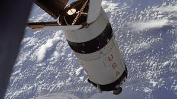
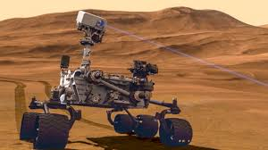
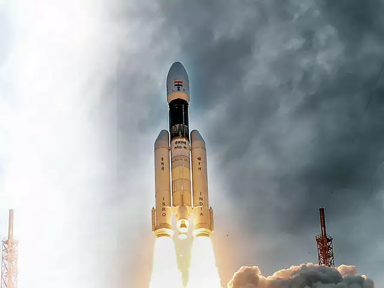

SUCESSFUL SPACE MISSION ARE:
Apollo
Six missions landed men on the Moon, beginning with Apollo 11 in July 1969, during which Neil Armstrong became the first man to walk on the Moon. Apollo 13 was intended to land, however it was restricted to a flyby due to a malfunction aboard the spacecraft. All nine crewed missions returned safely to the Earth.
Curiosity
The Mars Science Laboratory and its rover centerpiece, Curiosity, is the most ambitious Mars mission yet flown by NASA. The rover landed on Mars in 2012 with a primary mission to find out if Mars is, or was, suitable for life. Another objective is to learn more about the Red Planet's environment. In March 2018, it celebrated 2,000 sols (Mars days) on the planet, making its way from Gale Crater to Aeolis Mons (colloquially called Mount Sharp), where it has looked at geological information embedded in the mountain's layers. Along the way, it also has found extensive evidence of past water and geological change.
Cloudsat
The CloudSat mission was selected under NASA's Earth System Science Pathfinder program in 1999. Overseen by NASA's Science Mission Directorate, the Earth System Science Pathfinder Program sponsors missions designed to address unique, specific, highly focused scientific issues, and to provide measurements required to support Earth science research. Missions selected in this program are small- to- medium-sized and are capable of being built, tested, and launched quickly. They support a variety of scientific objectives related to Earth science, including studies of the atmosphere, oceans, land surface, polar ice regions, and solid Earth. CloudSat's primary mission is scheduled to continue for 22 months after launch in 2006, in order to allow more than one seasonal cycle to be observed, although radar lifetime data indicates that the radar is expected to operate for three years with a 99 percent probability.

Chandrayaan-2
The primary mission of Chandrayaan-2 was to demonstrate the soft landing of the ‘Vikram’ lander on the South Pole of the Moon, operate the robotic rover Pragyan on the lunar surface, and get exciting images and data. On September 7, during the last minutes of descent, the communication link snapped with Vikram when it was about 2.1 kms from the surface of the moon. After three days, the ISRO confirmed the sighting of Vikram through images beamed by the Orbiter.
